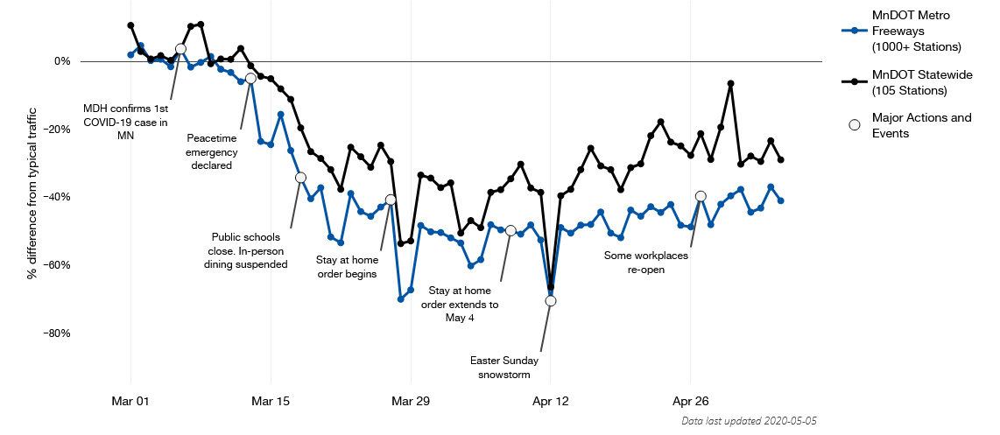
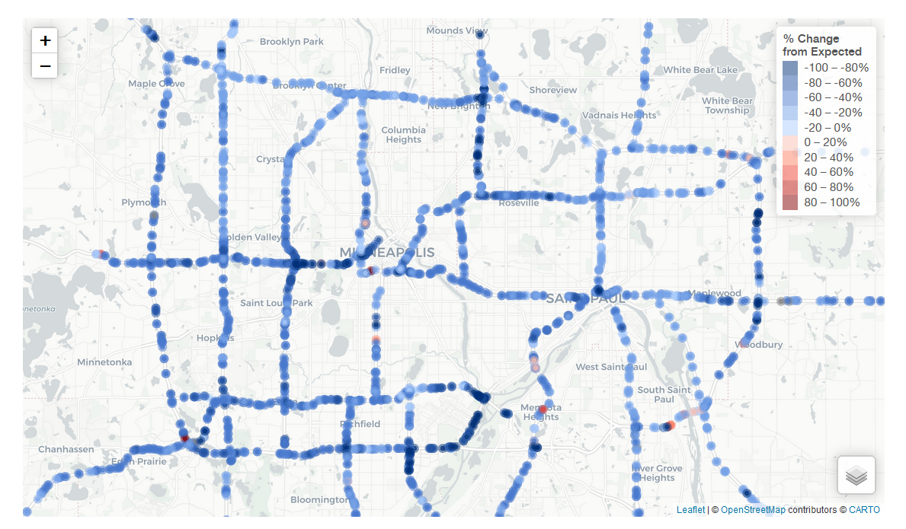

In early 2020, the transportation and modeling team at the Metropolitan Council began using traffic data from the Minnesota Department of Transportation (MnDOT) to evaluate the impact of recent physical distancing efforts on regional and statewide travel. I developed an accompanying R Shiny app with sections for visualizing the model results, downloading tabular data, and explaining the model. Individual items include an interactive plot showing the percent difference from expected traffic levels and an interactive map displaying the change in expected traffic at individual traffic sensors across the Twin Cities metro area and Rochester area.
I built the app based on the {golem} framework, which builds the app repository as an R package. The result is a robust Shiny app, complete with testing and modularized elements. The app integrates other package I’ve developed, including {council.skeleton} and {councilR}. The first iteration of the app was published within a week of starting on it.
Screenshots
The plot shows the daily relative decrease in freeway travel over time across the Twin Cities metropolitan region after March 1. Points that fall below the zero-line represent decreases in travel relative to typical travel on that day of the year and day of the week. Typical travel is estimated using a statistical analysis of traffic volumes from 2018, 2019, and 2020 prior to March 1.

The map shows the decreases in travel at individual traffic monitoring sites across the Twin Cities Metropolitan area. Traffic monitoring is performed by the Minnesota Department of Transportation (MnDOT) using detectors built into the infrastructure of the roads. These detectors are usually used to estimate congestion along Metro area highways.

Relevent links
Official news release
Live app site (updated regularly)
GitHub repository